This article assumes you have successfully installed NetBeans 4.0 and a Java SDK (also known as a JDK).
We will first explore our new IDE and one of the embedded sample applications. The first section will make heavy use of screenshots and will let you dive right in - immediately after completing the NetBeans installation. Then we will learn how to use NetBeans to modify, compile and run a simple Java application. As we progress, there will be fewer screenshots and more source code. Our pace will accelerate as we learn to use some of NetBeans' more advanced productivity-enhancing features, while adding interesting enhancements to the "Anagram Game" sample application. By the end of this article, you will know how to use NetBeans to write Java code that opens and parses XML documents, requests user input from simple dialogs, and much more. Most importantly, you'll be well on your way towards creating and extending Java applications on your own. Let's dive in!
When I first started NetBeans from the Start Menu, it finished loading in about 15 seconds. In some cases, this may take longer the first time due to the fact that NetBeans is getting to know your system.
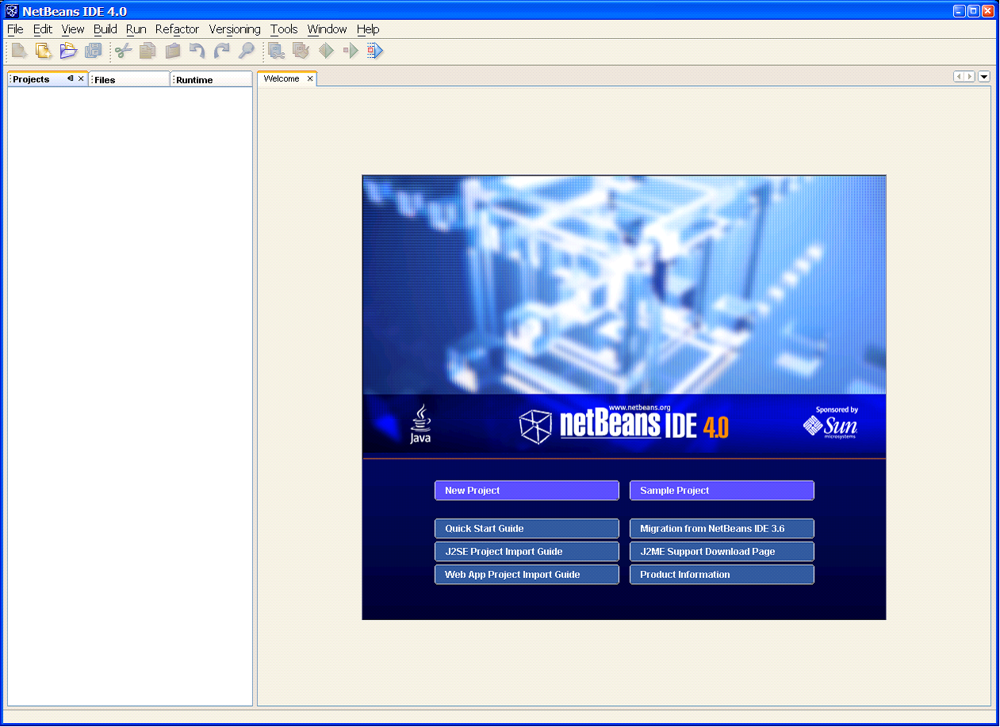At this point you should feel free to nose around a bit - when in doubt, choose "Cancel"! When you're ready to proceed, go ahead and click the "Sample Project" button under the Welcome graphic.
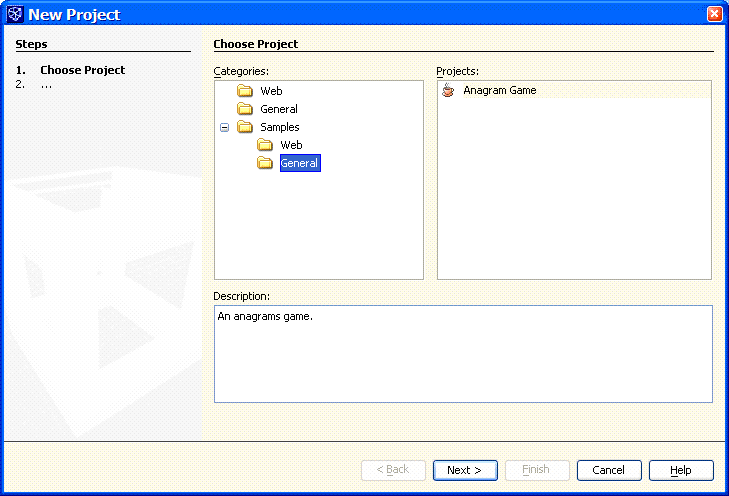 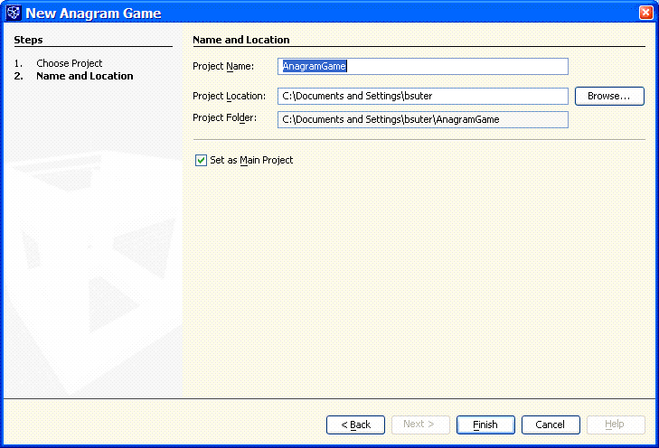By default, the project location will be set to your home folder. Let's go ahead and create a folder called "code" under the C: drive, and then a folder called "java" within it. Then use the Browse button to choose this new folder as the project's location, as shown in the next screenshot.
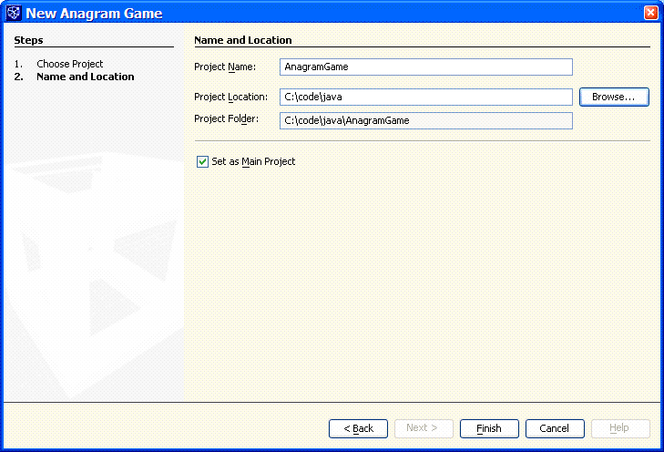After you click "Finish" in the above dialog, a "Scanning Project Classpaths" dialog appears and may last for about one minute.
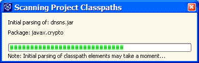Now the "Projects" tab in the left "pane" displays a single node titled "AnagramGame". The welcome splash screen is still visible in the "main" area. Expanding the "AnagramGame" node in the "Projects" tab, and sequentially expanding all its children, results in the following tree structure:
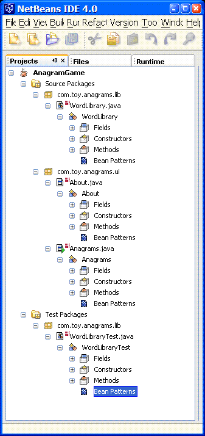Above I have resized the main NetBeans window to just show the left "pane".
Of note is that this sample application is comprised of two "source packages" (one a library, the other the user interface), and one "test package" (for the library). Also of note is that each class, in addition to Fields/Constructors/Methods, has a "Bean Patterns" node (though this node is empty for each current class above). In this article we will not be using "Bean Pattern" nodes, though you should know that they aid in making your code more module, flexible and re-usable through the use of JavaBeans components.
Next we double-click on the "About.java" node - you will see something that looks like this:
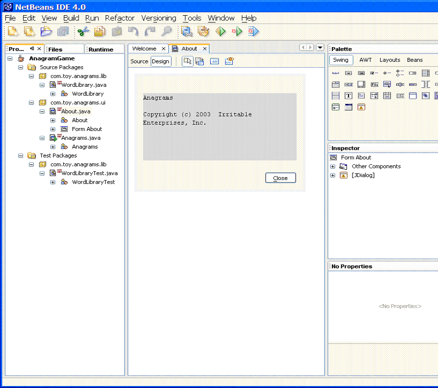If you like, you can now close the "Welcome" tab in the main area/pane. At this time you may once again wish to explore NetBeans on your own: you can open source files, view visual "forms" for some of the user interface classes, or examine non-source files by switching from the "Projects" to the "Files" tab of the left pane. There you can look at various .properties files and Ant build scripts. From the "Tools" menu, the "Options" window will give you an idea of how flexible and customizable this IDE really is!
For good measure, and to make sure you are able to take a break and know how to get started again, let's go ahead and close, then re-open NetBeans. If you do so, you should find that this time the IDE opens up with a blank main area, and the "Projects" area will show the AnagramGame project. Now click the "Run Main Project (F6)" button in the toolbar (it is green and yellow; you can hover to see the icon's title), and NetBeans opens an "Output" window, containing the following text:
init: deps-jar: Created dir: C:\code\java\AnagramGame\build\classes Compiling 3 source files to C:\code\java\AnagramGame\build\classes compile: run:
In addition, a small window pops up, namely the user interface for AnagramGame.
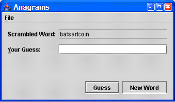I got the first guess correct on my first try! I think it helped that I browsed through all the project folders and files earlier, as I recall seeing a long list of words (the list of unscrambled words, I assume) and that must have helped me out. Let's keep that in mind for later ...
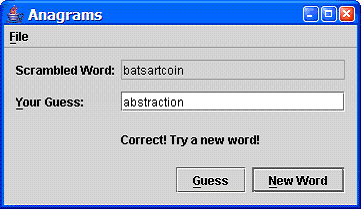First we will simply change the text of one of the user messages in the sample application. In the "Projects" pane, double-click the com.toy.anagrams.ui.Anagrams node, and its source will open up as a new tab in the main window area. The upper left corner of the tab has a "Design" and a "Source" button. Choose the "Source" button if it is not already selected - you should now see the Java source code for the Anagrams class in the editor. Right-click in the left margin and make sure that "Show Line Numbers" is checked. Go to line #211 (CTRL-G is quick). This line should read:
feedbackLabel.setText("Incorrect! Try again!");
We will (trivially) alter the text, compile, run the application, guess a word incorrectly, and see the modified message. I changed mine to read:
feedbackLabel.setText("Not quite ... please try again!");
At this time, note that in the title of the editor tab there is now a small asterisk between the word "Anagrams" and the "X" (close command). This asterisk is meant to indicate that the file has been modified but not saved. File->Save (or CTRL-S) will save our changes. So at this time our source file has been modified and saved, but the compiled class file still reflects the old code. Here's where NetBeans will handle two steps at once for us: click the green/yellow "Run Main Project" icon, or just hit F6. The application will open up as before. In the output console, however, you should see the following:
init: deps-jar: Compiling 1 source file to C:\code\java\AnagramGame\build\classes compile: run:
As you can see, prior to running the application, NetBeans (actually our Ant build script) realized that a file had been modified and compiled it for us before executing the "run task". Go ahead and enter a guess, preferably something incorrect. If all went as expected, the feedback message should now appear with the text that you customized above.
Go ahead and play a couple rounds - I got stock at "iccrmutsnaec". For purposes of demonstrating further essential capabilities of NetBeans, I'm going to cheat and search the source code for the solution. This presupposes that the jumbled versions of each word are listed in one of the project's source files, rather than being generated each time by randomly jumbling the original word. In a minute, we'll see that this is indeed the nature of the current implementation, later on we'll do something about that ...
In the "Projects" tab, right click on the "Source Packages" node and select "Find ..." from the context menu. You will be presented with the following screen, called "Find":
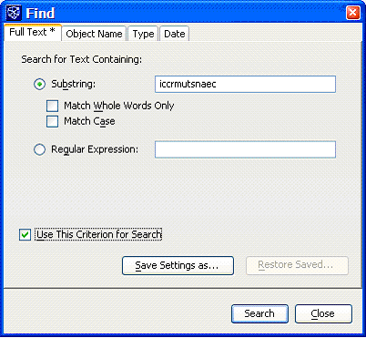In this screenshot, you can see that I already entered the text "iccrmutsnaec" as my search term. We'll leave all other settings as they are and click "Search" to begin the process. A new tab will appear next to the output console, indicating the results of the search. As you can see, one match was found, in file "WordLibrary.java", at line #53:
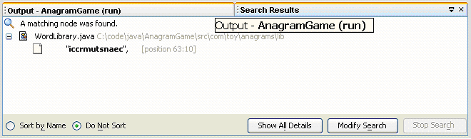Double-click on the match (the node labeled as "iccrmutsnaec", [position 63:10] above). This will open the corresponding source file in the editor, ensure the appropriate line is within view, and highlight the matching phrase. What you should see is that the term "iccrmutsnaec" is the sixth entry in an array of strings; this array is called "SCRAMBLED_WORD_LIST". Now observe that immediately above this array is another array of strings, but there the entries appear to be actual English language words. Let's see what that array is called: "WORD_LIST". At this point I'm sure we've all figured out that the solution to the scrambled word "iccrmutsnaec" can be found as the sixth entry of the "WORD_LIST" array. Of course, it is possible that the original author chose a less obvious mapping between the clear-text words and their scrambled versions, but fortuitously they did not! So, looking at line #16 we see the word "circumstance". Typing this word into the application (if you closed it in the meantime, you may play again until you reach the appropriate point), we see the following screen:
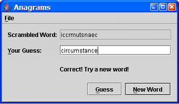By now we know how to open a file for editing, modify the source code, compile and run the application, search the source code, and cheat. Let's put some of these skills together to make the AnagramGame more interesting. We are going to implement dynamic generation of scrambled words, eliminating the need for maintaining a list of scrambled words in the source code. As a result, we'll eliminate one way for us to cheat. In a second step we will then ensure that the scrambled versions are generated at random, so that the game-play becomes more interesting.
Still within the WordLibrary source you will see a method called "getScrambledWord". Examining this method more closely, we see that its implementation is extremely simple:
return SCRAMBLED_WORD_LIST[idx];
This is indeed a good place to make our modifications. Let's start by changing this line (#126) to the following:
return generateScrambledWord(idx);
NetBeans now marks this line of code with a red wavy underline and a red X icon in the margin, indicating that there it has found a syntactic problem in our source. If we place the cursor over any part of the underlined source, a small message appears, indicating that it does not recognize the method signature generateScrambledWord(int). Of course, we havent created this method yet, so let's do so now. We will simply add it to the end of the class, starting at line #147:
/**
* For a specified index, finds the corresponding word in the
* dictionary and generates a scrambled version of this word.
* @param idx index of the word to be scrambled
* @return a scrambled version of the relevant word
*/
protected static String generateScrambledWord(int idx)
{
int j = 0;
String word;
String scrambled = "";
java.util.Random r;
r = new java.util.Random();
word = getWord(idx);
for (j = 0; j <word.length(); j++)
{
if ( r.nextBoolean() )
scrambled = scrambled + word.charAt(j);
else
scrambled = word.charAt(j) + scrambled;
}
return scrambled;
}
The purpose of our generateScrambledWord(int) function is to return a scrambled version of the dictionary entry specified by the integer argument, the index. Im sure we could think of a number of different ways to scramble (re-order) the letters of a word, and you are free to implement the body of this method in whatever way you deem fit. This could be as simple as reversing the order of the letters, but then the game might be too easy (still, go ahead and give it a try). Alternatively, we could swap the position of any two adjacent letters, one pair at a time, until we reach the end of the word. Let your imagination take hold and find an algorithm that is fun to implement and provides for a fun game. Let me briefly explain the thought behind the implementation Ive given in this example. I have chosen to use Javas built-in random number generation utility in such a way that the result of scrambling a given word will look different each time it is generated. We construct the scrambled word one letter at a time, and for each new letter, we let a random number determine whether to add the new letter at the beginning or the end of the word fragment. In this way we construct a new word, consisting of all the letters of the original word, but in a new and somewhat randomized sequence. At this point, go ahead and run the application. This time around I was unable to correctly guess many of the words, but due to the randomness of the sequencing, every now and then you can expect to see a scrambled word that closely resembles its un-scrambled form. One thing you can try is to modify the algorithm above to re-order pairs of characters instead of individual characters the resulting words may be a bit easier to identify. If you implement an algorithm that makes for especially compelling game play, please share it with all the readers of this piece.
At this time, we are no longer making use of the scrambled word dictionary (the SCRAMBLED_WORD_LIST array), so lets go ahead and remove it from the WordLibary.java source (lines 57 to 104).
If you play the new version of the game, you may (as I did) become frustrated at your inability to identify the underlying words. What to do? Well, we know that the original words are stored in a simple dictionary, and we also know that the game steps through that dictionary one word at a time, from start to end. So with the current code, since we have access to the source, we can still cheat by keeping track of how many words have already been tried and looking up the corresponding dictionary entry. When I run the game, the first scrambled word I see is noiatabsrct and I dont immediately recognize it. But if I go to line #11 in WordLibrary.java I see that the first dictionary entry is abstraction. Our next goal will be to randomize the order in which words are taken from the dictionary, and we will do so again by using the Random class of the java.util package. As we are using this class twice now, lets have a quick look at its API documentation, so that we have a basic understanding of what it does for us:
An instance of this class is used to generate a stream of pseudorandom numbers. The class uses a 48-bit seed, which is modified using a linear congruential formula. (See Donald Knuth, The Art of Computer Programming, Volume 2, Section 3.2.1.) If two instances of Random are created with the same seed, and the same sequence of method calls is made for each, they will generate and return identical sequences of numbers.
So far, we have used the zero-argument constructor for java.util.Random, out of convenience. As the API comments above indicate, we should take care to initialize each instance of Random with a unique seed, otherwise repeated use of the application may not have a sufficiently random nature. Looking at the documentation for the zero-argument constructor, we see that it actually uses the current time (in milliseconds) as a seed, so our existing code is okay and we can proceed on to more important things.
What changes do we need to make to randomize the order in which words are chosen from the dictionary? In our WordLibrary class, we see that there are two methods that seem relevant: both getWord(int idx) and getScrambledWord(int idx) accept as their argument an index into the dictionary. We will first place the cursor within the method name of getWord, then right-click and choose the option Find Usages. We see three calls to this method (one in WordLibraryTest, two in WordLibrary itself). Each of these is used internally by the WordLibrary component (including its test harness) and we dont need to change anything there. Next, we will place our cursor within the method name of getScrambledWord, then type Alt-F7. Once again we see three usages of the method, but now two of them are within the Anagrams class let us focus our attention on these. In both cases (lines 28 and 195) the argument value passed to getScrambledWord is a variable called wordIdx. This variable itself is declared on line 22 and initialized to zero. Let us search for usages of the wordIdx variable: there are three.
We now see that the wordIdx variable determines which word is chosen after each guess, and this variable is only modified in one place, namely line #192 of Anagrams.java:
wordIdx = (wordIdx + 1) % WordLibrary.getSize();
To randomize the order in which words are chosen from the dictionary, we need to modify this line such that wordIdx takes on random values falling within the lower and upper limits of the dictionary. The java.util.Random.nextInt(int n) method does exactly this, so lets go ahead and replace line #192 with the following line of code:
wordIdx = new java.util.Random().nextInt(WordLibrary.getSize());
To see if this achieves the desired affect, we must of course play the game once more! The first word is getting easy by now it always seems to be a scrambled form of abstraction. Indeed, the Anagram constructor always starts the game by choosing the first word in the dictionary since the wordIdx variable is statically initialized to a value of zero. But once we get passed the first word of the game, all subsequent choices appear to be suitably unpredictable. Therefore we have hopefully made the game play a bit more fun, and we have just about one more way (assuming you can read the source code) of cheating. If you like, you can go ahead and ensure that the first word of the game is also chosen at random from the dictionary. To do so, simply ensure that the initial value of the wordIdx variable is computed in the same way as subsequent values - with that, line #22 of Anagrams.java becomes:
private int wordIdx = wordIdx = new java.util.Random().nextInt(WordLibrary.getSize());
If youre like me, you might guess that elxical is a scrambled form of lexical, but when confronted with lasiugsidintinhbe youd be clicking on New Word in a hurry. What makes indistinguishable more difficult on average than lexical? The fewer letters there are in the original word, the more likely it is that the scrambled form will not be much different, given our current algorithm for scrambling the words. More generally, though, I find it easier to descramble a word the shorter it is, independent of how it has been scrambled. So for someone just starting out, a set of shorter words would be fun, while for an experienced scrabble player, a set of long words might be appropriate. But of course there are other characteristics besides word length, such as whether the word is rarely used, or its part of speech, language, or topic. Can we use these observations to make the game more useful, and can we learn something new about NetBeans and Java while were at it?
In this section, we will externalize the dictionary, meaning that it will be possible to play the game with a number of different word lists, and that the user can even supply their own customized list of words. There are of course a number of ways to do this; we will implement this functionality by reading a file containing a list of words, structured and formatted as XML. By the end of the section, you will know how to open and read files from the local file-system or the web and efficiently parse a simple XML file.
We want to add a new menu item for loading an external word list. To do this, we switch to design mode. We go from looking like this:
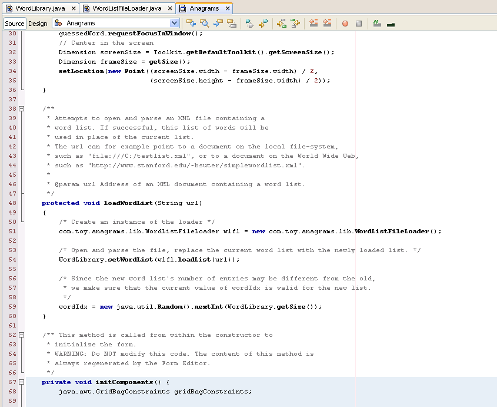To this:
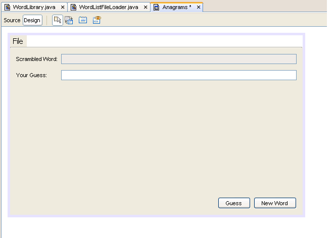In design mode, we also see a panel on the right called Inspector. Initially it looks like this:
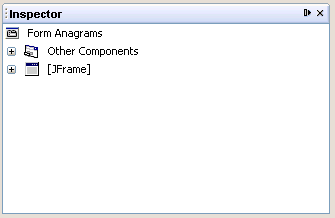The Inspector panel shows us the hierarchical structure of the Swing components that make up our graphical user interface. If we expand the [JFrame]" node, we see that the first component is called mainMenu [JMenuBar]. This in turn contains a fileMenu [JMenu] item, which itself contains two further nodes: aboutMenuItem [JMenuItem] and exitMenuItem [JMenuItem]. The pattern we see here is that each node is labeled with the name of the corresponding variable; the component type follows in square brackets. The main frame is in fact our Anagrams class itself (it inherits from JFrame), and so the Inspector does not show an instance name for that first component. Our goal is to add a menu command for loading an external word list, so lets use the Inspector to add a new item between the About and Exit entries in the File menu.
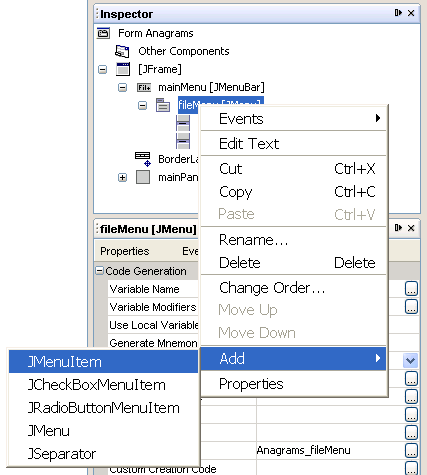Right-click the fileMenuItem node, choose Add and then JMenuItem. A new menu item is added, in third position after the Exit item. Initially NetBeans gives this item an auto-generated name, but we will change this to openNewListMenuItem by right-clicking the new item and choosing to Rename . Finally we right-click the new item again and choose Move Up, which will result in the desired order.
Now we select the exitMenuItem and click the Properties button in the Properties panel immediately below the Inspector. Amongst other things, we see the following three interesting properties: mnemonic, text, toolTipText. For this specific menu item, the values for these are, respectively, E, Exit and Quit Team, Quit!. Lets select our new menu item and set its corresponding properties to O, Open Word List, Choose a new word list file, replacing the current list. respectively.
Next we wish to add code that will run whenever this menu item is selected by the user. NetBeans helps us out here again: In the Inspector, right-click on the openNewListMenuItem node, choose Events, then Actions, then actionPerformed from the unfolding menus. NetBeans will create an event-handler method and return you to the Source view so that we are ready to write the necessary implementation. The new method is automatically given the name openNewListMenuItemActionPerformed, but you can safely rename it using the Refactor commands if you so wish. A quick aside for those of you who may have previous experience with Swing GUI designer tools: it is refreshing and reassuring to see how clean and well the auto-generated code is structured, named and formatted. For example, the code for our three items in the File menu maintains the same order as the menu items themselves. Back to the task at hand: When the user selects the Open Word List menu item, we will have them choose a file on their local file-system, and then attempt to open, parse, and use this new word list. If the file is unavailable, or does not contain a valid word list, the game will continue to use the current word list. Here is what NetBeans has given us to start with:
private void openNewListMenuItemActionPerformed(java.awt.event.ActionEvent evt) {
// TODO add your handling code here:
}
Our Loader will take a URL as its main argument, so we need to generate an appropriate URL based on the file chosen by the user. First we create a JFileChooser instance and use it to display an Open File dialog. If the user selects a file, we generate a URL for it by pre-pending the file:/// protocol to the absolute path name.
private void openNewListMenuItemActionPerformed(java.awt.event.ActionEvent evt) {
/* The "initialDirectory" variable determines what directory is first displayed
* when choosing a new word list. An empty or a null string will start the chooser
* in the user's default directory, which for Windows is typically "My Documents",
* and for *nix is typically the user's home directory.
*/
String initialDirectory = "";
String fileURL;
JFileChooser chooser;
int returnVal;
chooser = new JFileChooser(initialDirectory);
returnVal = chooser.showOpenDialog((Component) evt.getSource());
if ( returnVal == chooser.APPROVE_OPTION )
{
/* To create a URL for a file on the local file-system, we simply
* pre-pend the "file" protocol to the absolute path of the file.
*/
fileURL = "file:///" + chooser.getSelectedFile().getAbsolutePath();
this.loadWordList(fileURL);
}
}
The above method demonstrates how you can present the user with a file chooser dialog; it then calls the as-yet-unknown method loadWordList. This method should take as an argument the address of a word list file and, assuming the file is okay, replace the current word list. Heres what that method looks like:
/**
* Attempts to open and parse an XML file containing a
* word list. If successful, this list of words will be
* used in place of the current list.
* The URL can for example point to a document on the local file-system,
* such as "file:///C:/testlist.xml", or to a document on the World Wide Web,
* such as "http://www.stanford.edu/~bsuter/simplewordlist.xml".
*
* @param url Address of an XML document containing a word list.
*/
protected void loadWordList(String url)
{
/* Create an instance of the loader */
com.toy.anagrams.lib.WordListFileLoader wlfl = new com.toy.anagrams.lib.WordListFileLoader();
/* Open and parse the file, replace the current word list with the newly loaded list. */
WordLibrary.setWordList(wlfl.loadList(url));
/* Since the new word list's number of entries may be different from the old,
* we make sure that the current value of wordIdx is valid for the new list.
*/
wordIdx = new java.util.Random().nextInt(WordLibrary.getSize());
}
We see that there is a new class in play, called WordListFileLoader. In addition, the WordLibrary class has a new method called setWordList. I added this method at line #125, it is very simple:
public static void setWordList(String[] wordList)
{
if ( wordList != null )
WORD_LIST = wordList;
}
The entire source to the new WordListFileLoader class is available here, but we will step through the important parts, one at a time. This new class has one significant method, as well as an inner class that inherits from org.xml.sax.helpers.DefaultHandler. An instance of WordListFileLoader is intended to open, read, parse and evaluate the contents of an XML file from a local file-system, or from an XML document accessible via HTTP. Lets look at a high-level description of what the WordListFileLoader.loadList method does:
There are a variety of ways to parse an XML document in Java. The pervasive DOM (Document Object Model) approach results in an in-memory hierarchical model of the XML documents node-set. In our case the structure of our data-set is simple (a list of words) and we will immediately convert the parsed list into a String[] array, so maintaining an in-memory XML document is of little value. SAX is an event-based approach a handler class listens for parser events that occur when the parser encounters an XML element, or an attribute, or the end of an element. The handler can choose to process or disregard any such events. If suitable to the purpose, the SAX based approach tends to be preferable as it can handle very large documents with ease.
public String[] loadList(String url)
{
InputStream is;
try {
URL u = new URL(url);
is = u.openConnection().getInputStream();
} catch (IOException ioe) {
report("Unable to open or find the specified wordlist.");
is = null;
}
if (is == null)
{
report("Unable to load the requested wordlist. An error occurred while opening the file.");
return null;
}
SAXParserFactory parserFactory = SAXParserFactory.newInstance();
SAXParser parser;
try {
parser = parserFactory.newSAXParser();
} catch ( ParserConfigurationException pce ) {
report("Error setting up the XML Parser. The parser is not properly configured. Loading aborted.");
return null;
} catch ( SAXException saxe ) {
report("Error setting up the XML Parser. Loading aborted.");
return null;
}
try {
WordListHandler handler = new WordListHandler();
parser.parse(is, handler);
} catch ( Exception e ) {
report("Unable to load the list, probably while performing SAX parsing.");
return null;
}
return this.list;
}
As described above, a SAX handler must implement various event handlers, in our case there are exactly three: starting an element, the contents of an element, and closing an element. The resulting code looks as follows:
public class WordListHandler extends DefaultHandler
{
protected String nodeType;
protected ArrayList al;
public void startElement(String uri, String localName, String qName, Attributes attributes) throws SAXException
{
if ( qName == "word" )
{
nodeType = "word";
} else if ( qName == "wordlist" ) {
al = new ArrayList();
}
}
public void endElement(String uri, String localName, String qName) throws SAXException
{
if ( qName == "word" )
{
nodeType = null;
} else if (qName == "wordlist" ) {
/* Cast the ArrayList to a an array of String objects. */
list = (String[]) this.al.toArray(new String[al.size()]);
}
}
public void characters(char[] chars, int start, int length) throws SAXException
{
if ( this.nodeType == "word" )
{
this.al.add(new String(chars, start, length).trim());
}
}
}
Our word list document structure contains just two types of XML element: <word> and <wordlist>. In this code listing, you can see that the actual work of adding a new word to the list occurs within the characters method. The other two methods keep track of what node we are currently reading, and perform appropriate setup and clean-up actions, such as initializing the new word list and updating the outer class list field, respectively.
The entire WordListFileLoader Java source is available here. A sample word list document is available here or might look like this:
<?xml version="1.0" encoding="utf-8" ?>
<wordlist>
<word>welcome</word>
<word>jacuzzi</word>
<word>elefant</word>
<word>abracadabra</word>
</wordlist>
So now you are able to create your own word lists by creating and editing XML files in a word processor or the like. Given some time, Im sure you will come up with a number of fun, themed word lists. Wouldnt you like to share them with others? Would you like to use word lists created by other people, perhaps to make guessing the words more challenging for you? The good news is weve almost implemented just that. The bad news is I wont walk you through each step this time around. First you should create a new menu item (maybe called Download File List) in the same way we created the Open File List command. Add a method for the corresponding actionPerformed action (as before) and use the following code to implement said method:
private void downloadNewListMenuItemActionPerformed(java.awt.event.ActionEvent evt) {
String listURL;
String prompt = "Enter the URL to an XML word list:";
String initialValue = "http://";
listURL = (String) javax.swing.JOptionPane.showInputDialog(prompt, initialValue);
/* Perform some simple validation before attempting to download the new word list */
if (listURL != null && listURL.length() > 0 && listURL != initialValue)
{
this.loadWordList(listURL);
}
}
Thats as far as well go in this article, but I hope you have seen how straightforward and efficient it is to build clean, correct graphical user interface code using NetBeans form designer. Of course weve only just scratched the surface of whats possible, but we have enhanced the AnagramGame application in useful ways and you now have a simple platform, which you can use to try out new concepts and learn more about NetBeans. Youll have the most fun if you implement your own ideas, but here are a few to get you started:
| anagrams.jar | The modified AnagramGame application, as an executable JAR file. Click to play! |
| simplelist.xml | An example word list, as an XML document. |
| WordListFileLoader.java | A SAX-based parser for XML word lists. |
| anagrams-src.zip | Full Java source code to the modified AnagramGame application. |